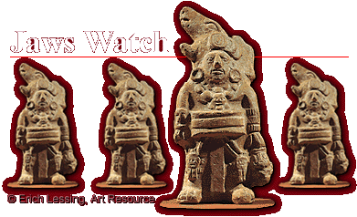

|
|
 Team members for this exciting event will be Heart of Jade, Puma Paw, Air Macaw, and Rainbow’s Son. All these mighty warriors proved their valor in the recent conquest of Cobá at Yaxuná. Several Puuc prisoners were taken, four of whom will make up the visitors’ team tonight. Heart of Jade is by far the noblest Jaws player, as fans will see when he flashes those jade inlays in his front teeth. But the most skillful may well be Air Macaw, the Jaws’s leading scorer. One of the Smoking Toads, Eagle Fist, is royalty. You’ll see him decked out in a feathered headdress and richly embroidered loincloth as he enters the court. |